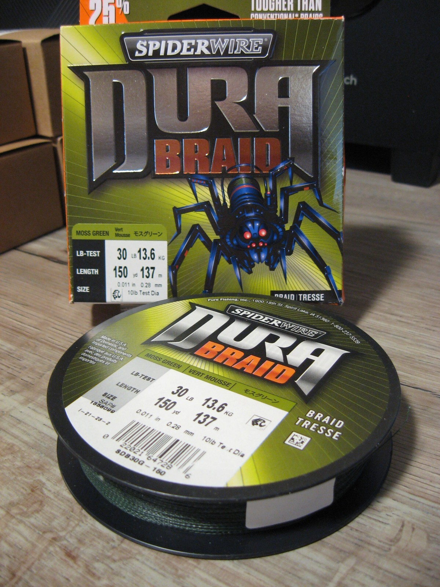

SpiderWire DuraBraid
Diameter chart, reel capacity & backing guide

This guide covers the photographed DuraBraid SDB30G-150 package: 30 lb Moss Green, .011 in / .28 mm and 150 yards. Its original spool label identifies SAP 1556099 and UPC 022021647286. This is an undated original-label reference, not a claim that every DuraBraid strength, color or later package has the same diameter.
- Construction
- Braided fishing line; Moss Green SDB30G-150 package
- Listed strengths
- 30 lb
- Line type
- Braid main line
Plan around the 30 lb package you have
Use this reference when your package matches SDB30G-150 and its printed size. A 150-yard spool can supply the whole braid section or leave a remainder, depending on reel capacity, backing and the reserve you need. The nominal strength is one part of the choice; check it against your rod, reel and intended fishing before filling.
How much DuraBraid will fit?
Calculated estimates, not measured fills. Stop at the reel manufacturer's fill level even if some line remains.
SpiderWire DuraBraid diameter chart
Undated original SDB30G-150 label only: SAP 1556099, UPC 022021647286, Moss Green, 30 lb / 13.6 kg, .011 in / .28 mm and 150 yd / 137 m. Both diameter units are independently printed. The 10 lb Test Dia comparison is not used as physical size. No other package or regional equivalence is implied.
| Strength | Inches | mm | Spools (yd) |
|---|---|---|---|
| 0.011 | 0.280 | 150 |
Choosing your DuraBraid strength
The photographed package is rated 30 lb / 13.6 kg. Its physical size is printed separately as .011 in / .28 mm.
The adjacent 10 lb Test Dia phrase is a monofilament comparison, not a second braid strength and not the capacity measurement.
Only this 150-yard Moss Green package is covered. A larger spool or another DuraBraid strength needs its own matching diameter label.
The diameter is manufacturer-printed, not independently measured by ReelCalc. No comparative toughness or abrasion result is asserted.
Want a guided recommendation?
Continue in the Setup WizardSame pound test, different diameters
At your selected strength
Loading diameter comparisons...
What changes with another line?
Nearby diameters in the line database
| Line | Strength | Inches | Difference |
|---|---|---|---|
| Loading line database... | |||
Backing, working line & leaders
Match the original package
Check SDB30G-150, 30 lb and .28 mm together. The photographed spool also carries SAP 1556099 and UPC 022021647286.
Choose your working length
Allow for your longest cast, a fish taking line, trimming and retying. A 150-yard package does not require a 150-yard fill.
Secure the spool connection
Follow the reel maker's braid attachment instructions. Where needed, start with monofilament backing and place the connection below the braid used during a cast.
Check the finished fill
Wind evenly under appropriate tension and stop at the reel maker's specified clearance. Inspect the line and knots before use; a legible label does not establish the condition of stored line.
How Much Fits on These Reels?
Estimated full-spool capacity for the DuraBraid strength selected above, with no backing. These are calculated examples, not physical tests or recommendations for every pairing.
Loading capacity estimates...
DuraBraid questions, answered
Does 10 lb Test Dia mean this is 10 lb braid?
No. The package identifies the braid as 30 lb. Its 10 lb Test Dia phrase compares its size with monofilament; .011 in / .28 mm is the separate physical diameter.
Can I use these diameters for a different DuraBraid spool?
Only if that spool has its own matching manufacturer label or specification. This guide is limited to SDB30G-150, 30 lb Moss Green and 150 yards.
Are these current-stock specifications?
The original photo is undated. Its identifiers also appear in the manufacturer US feed, but that does not establish the age, condition or uninterrupted formulation of a particular spool.
Will the entire 150-yard package fit?
That depends on usable reel capacity and any backing. Plan the braid section first, check the estimate and leave the reel maker's specified clearance.
Specifications & sources
Checked September 13, 2026. Numeric values and package identifiers were read directly from the original box and spool photos hosted on eBay. The saved manufacturer US feed independently lists SAP 1556099 with the same UPC, strength, length and color, but supplies no diameter. Seller-entered specifications and stock claims are not used.
Calculations use the catalog's listed inch diameters. Published inch and millimeter values may differ slightly because of rounding.
- Original DuraBraid box and identified spool Primary numeric and identity evidence printed on the manufacturer package; retailer-hosted photograph.
- Original package size-label close-up Direct reading of 30 lb, .011 in, .28 mm, 150 yd and the separate mono-equivalent phrase.
- Photograph-host listing Host provenance only; seller-entered specifications and availability are not numeric evidence.
- Manufacturer DuraBraid US product data Exact SAP/UPC, strength, length and color corroboration. This feed does not supply the physical diameter.